Window Textiles
Cotton, Linen & Blended Window Treatments — Yarn-Dyed, Block Print & Jacquard
Curtains Collection
A window panel changes a room more than almost any other textile — the right curtain filters light beautifully, anchors a colour palette and softens the architecture. Our curtains are woven, printed and yarn-dyed at our India facility from pure cotton, linen and cotton-linen blends. Available in pencil-pleat, eyelet and tab-top headers, in standard 168×229cm and 228×229cm panels and made-to-measure for trade. OEKO-TEX certified, with GOTS organic cotton and recycled-fibre options on request.
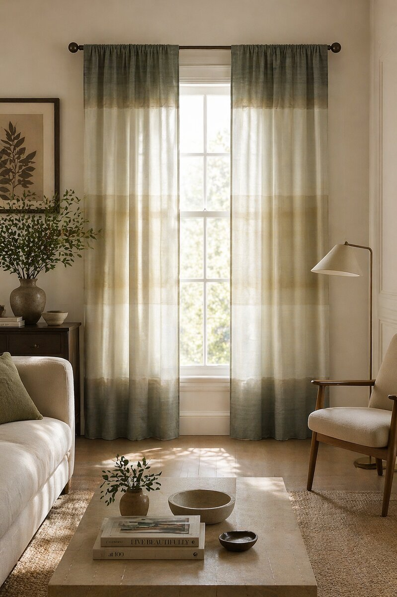
AH-CT-001
A washed pure linen panel with three soft horizontal colour-blocks — sage, mustard and cream — flowing into one another with a subtle dip-dye gradient. The semi-sheer drape filters light beautifully. Available in custom dye combinations and made-to-measure drops.
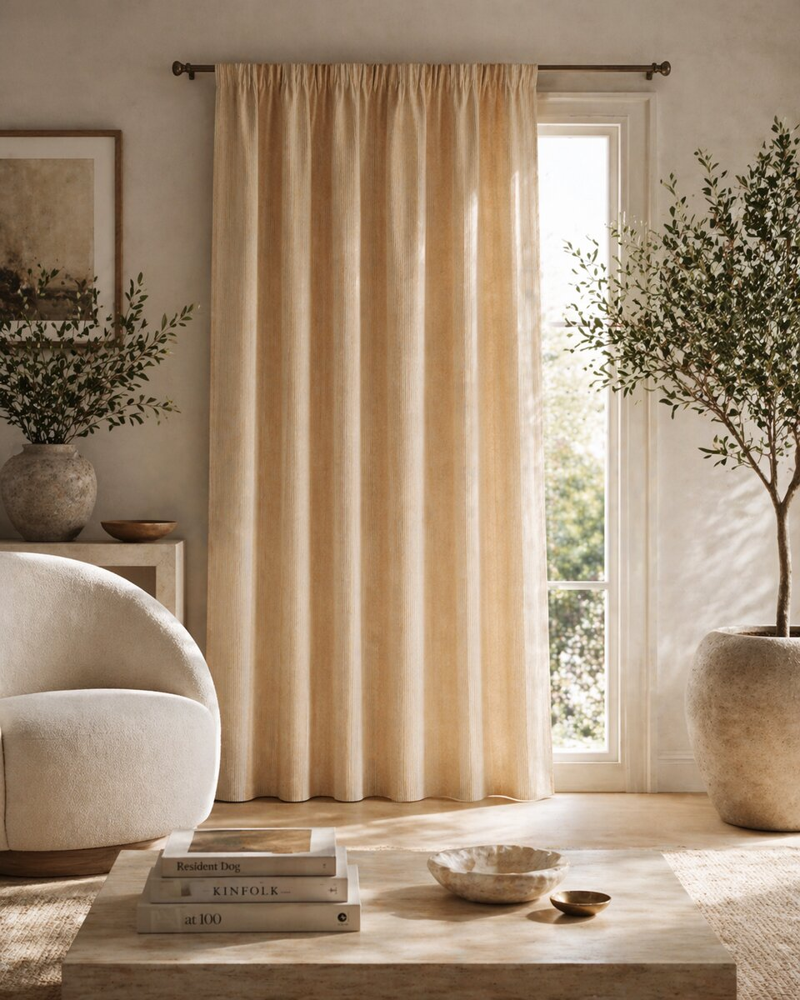
AH-CT-002
A solid-dyed, pre-washed pure linen curtain panel in warm honey-buff — the slubby linen yarn gives a beautiful natural lustre while the wash gives a soft, lived-in drape. Pencil-pleat header standard; eyelet and tab-top on request. Available in our full custom-dye colour palette.
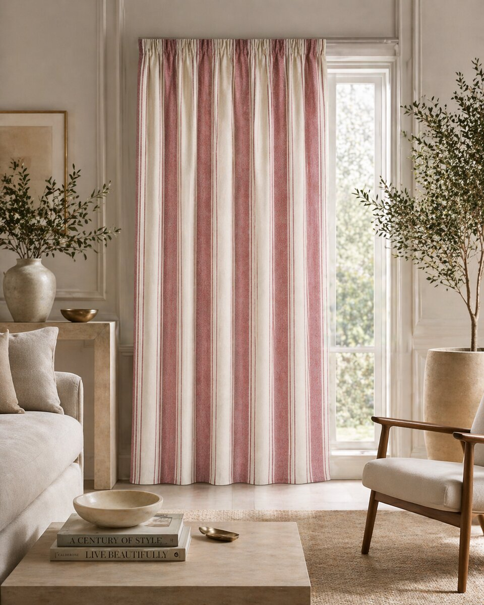
AH-CT-003
A timeless yarn-dyed cotton panel in dusty rose and ivory with fine charcoal pinstripes — the classic multi-stripe proportion gives instant warmth without dominating the room. Woven on our shuttle looms; brushed for soft handfeel. Strong selling colourway for bedroom and lifestyle programmes.
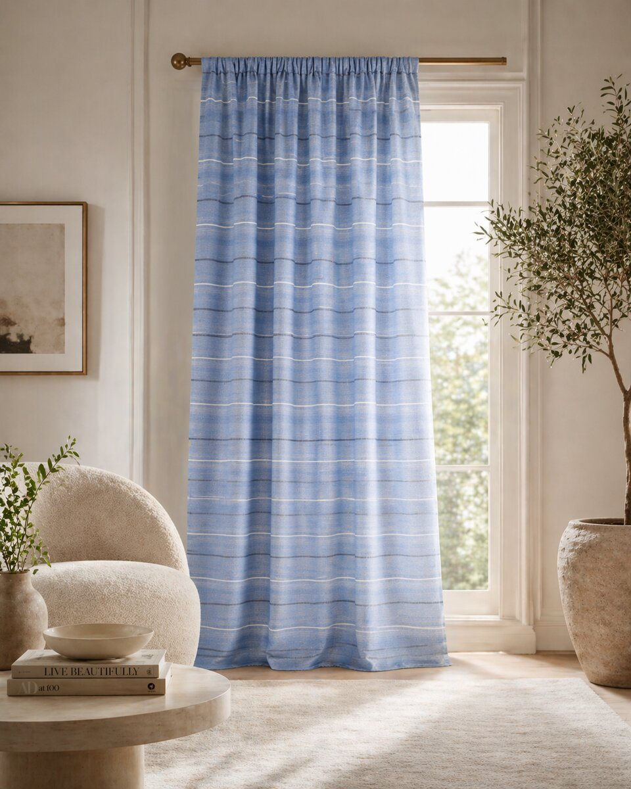
AH-CT-004
A relaxed cornflower-blue cotton panel woven with an irregular ivory pinstripe — the imperfect, hand-loomed quality gives this an artisanal character that feels both fresh and lived-in. Semi-sheer; filters light without darkening. Available in a coordinating sage colourway.
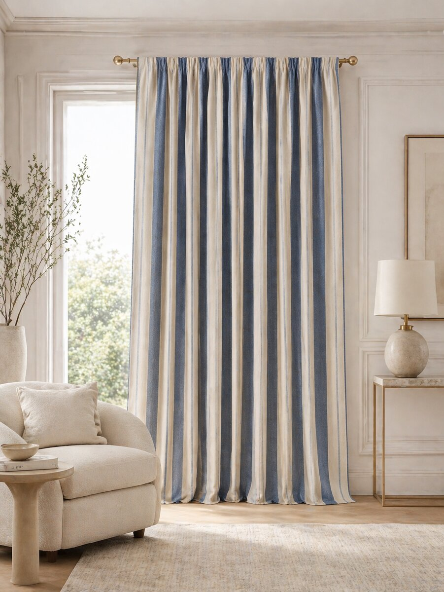
AH-CT-005
Heavyweight cotton-linen blend curtain in a yarn-dyed wide stripe — deep indigo bands alternating with natural cream and finished with a fine charcoal pinstripe accent. Substantial drape; the kind of panel that anchors a room. A perennial bestseller for premium hospitality and country-house programmes.
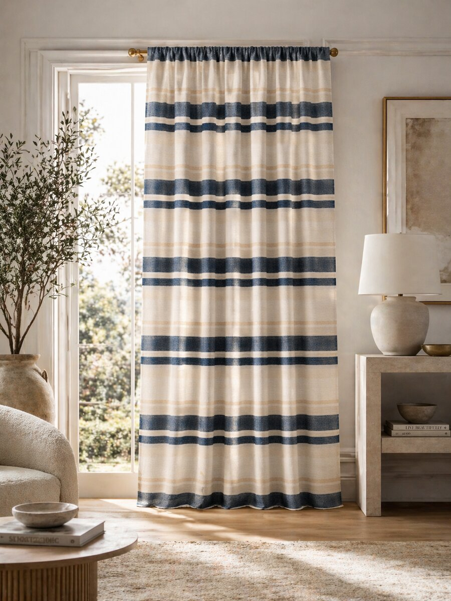
AH-CT-006
A pure linen panel with a strong horizontal block stripe — wide navy bands punctuated by ivory and warm camel — for confident, masculine drama. Heavyweight, substantial drape with real lustre from the slubby linen yarn. Strong appeal for design-led residential and boutique hotel programmes.
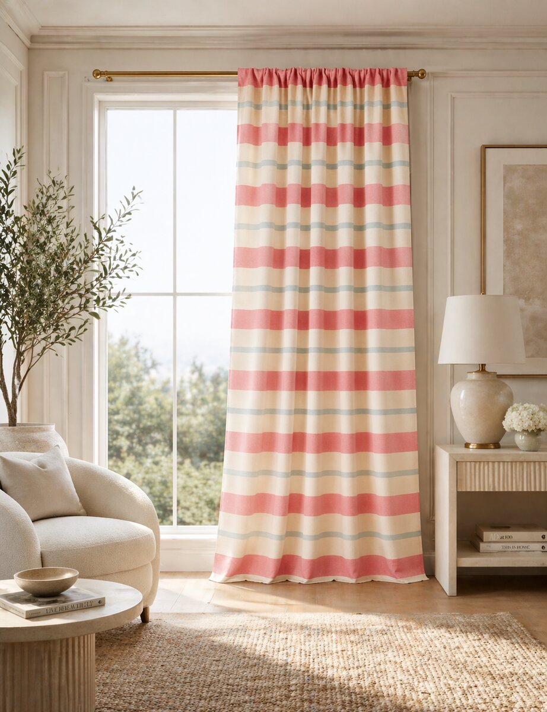
AH-CT-007
A cheerful coral and stone wide-stripe cotton curtain panel separated by fine warm-grey accent lines — a fresh, joyful palette for spring/summer interior programmes. Yarn-dyed for colour-fast durability. Beautifully light, semi-sheer drape. Available in matching cushion and bedspread programmes.
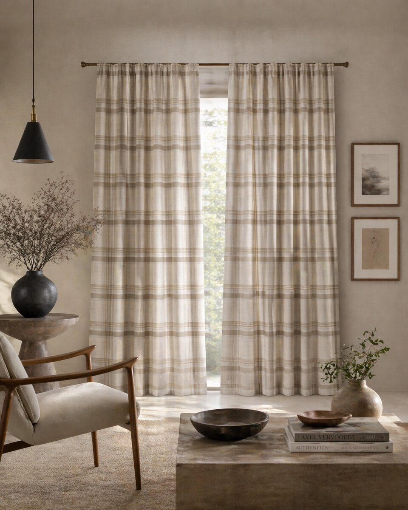
AH-CT-008
A pure linen curtain panel in a generous yarn-dyed plaid check — natural cream ground with taupe and warm-grey gridlines. The classical plaid proportion and natural palette give this panel quiet sophistication. Heavyweight, substantial drape. A timeless choice for country-house and boutique hospitality.
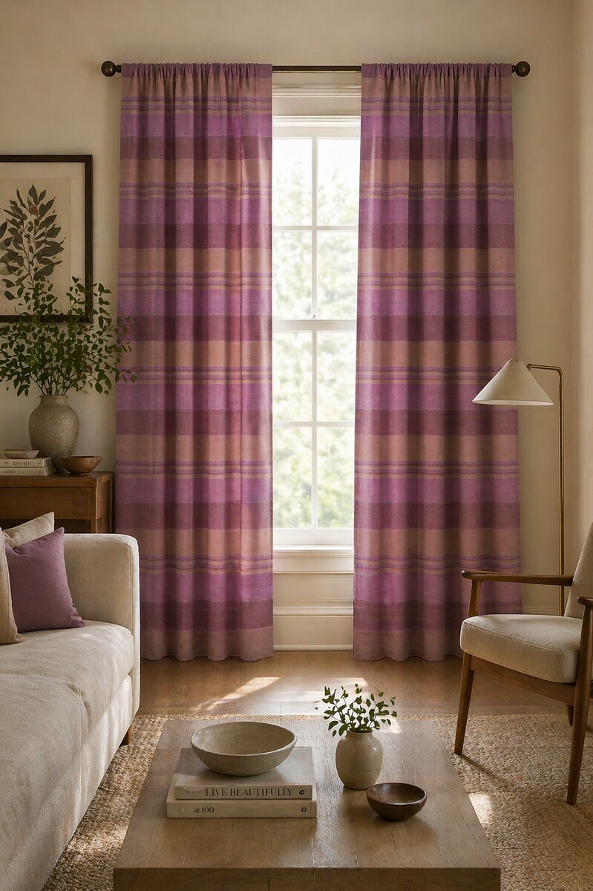
AH-CT-009
A romantic yarn-dyed cotton curtain panel in mauve plum, dusty rose and deep aubergine — the rich tonal plaid feels confident yet feminine. The colour story works beautifully in autumn / winter retail drops. Brushed for a soft handfeel; semi-sheer drape.
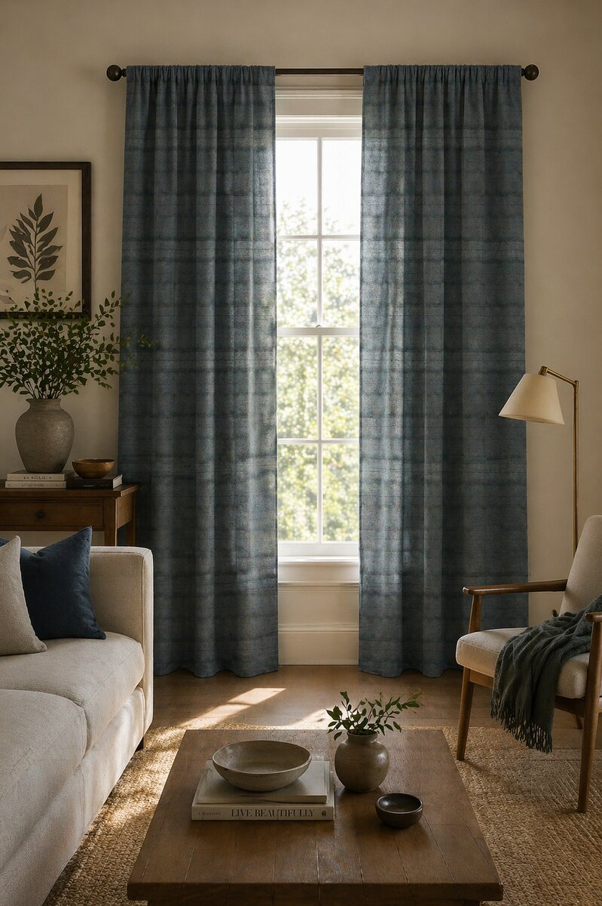
AH-CT-010
A solid-feel slate blue pure linen panel with a beautifully understated tonal plaid woven through it — the kind of detail that reveals itself only at close range. Heavyweight drape. The deep, moody palette makes this a year-round bestseller for premium residential interiors.
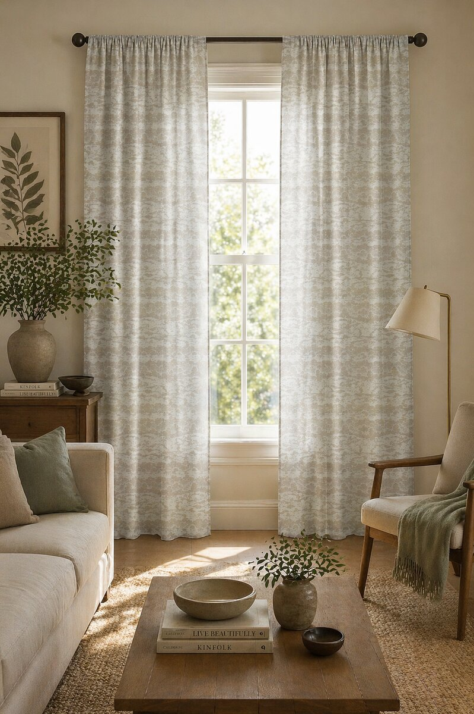
AH-CT-011
A pure linen sheer with a soft, watercolour-style cloud print in cream and stone — gentle, atmospheric and built to filter light to a soft glow. Beautiful for bedroom and bathroom programmes where privacy and natural light matter equally. Lightweight drape; pencil-pleat header.
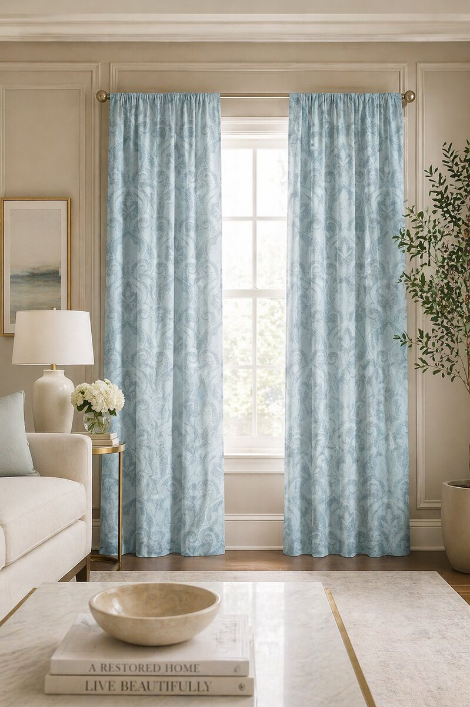
AH-CT-012
A pale duck-egg blue cotton-rich curtain panel with a tonal damask jacquard pattern — heritage detailing in a fresh, contemporary palette. The dimensional jacquard catches light beautifully. Full-bodied drape. The classical pattern with modern colour story performs well across both traditional and contemporary retail audiences.
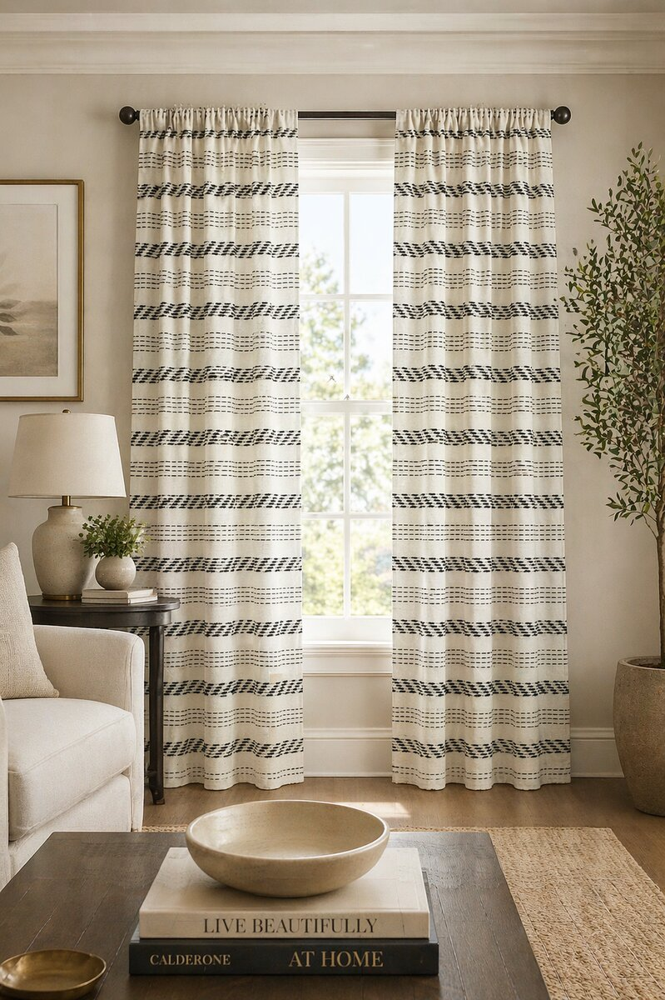
AH-CT-013
A clean cream cotton curtain panel with horizontal bands of woven charcoal-dash texture — a quietly graphic detail that gives architectural rhythm without competing with other patterns in the room. Strong fit for design-led, minimalist and Scandi-influenced retail programmes.
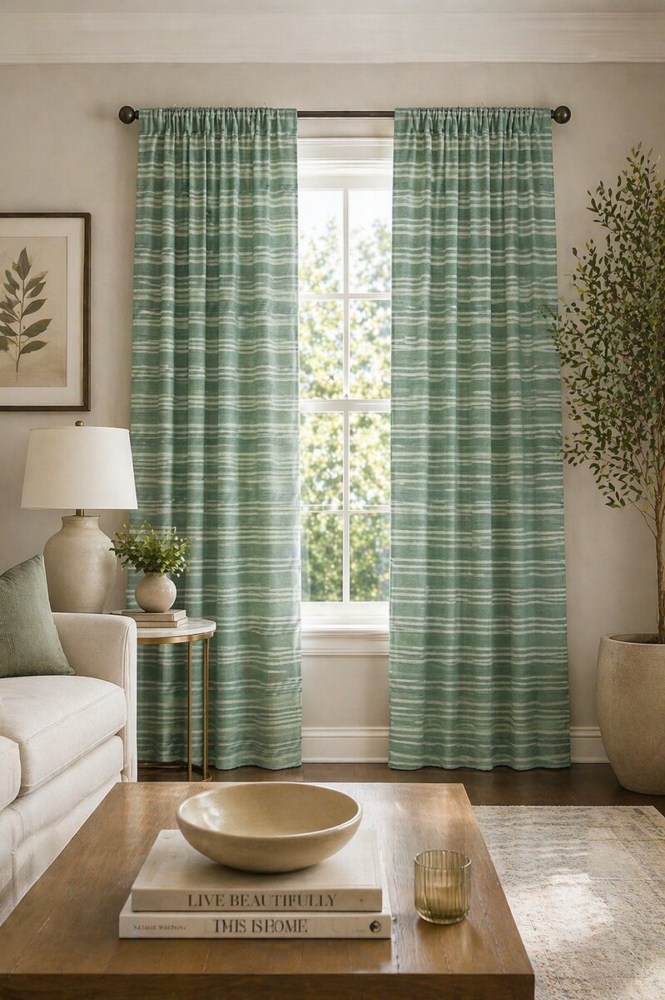
AH-CT-014
A pre-washed pure linen curtain in soft sage green with a tonal horizontal stripe — the wash gives a beautifully relaxed, slightly creased character that softens the room immediately. Substantial linen drape; pencil-pleat header standard. A grounded, calming palette that works year-round.
Request swatches of our curtain collection or discuss custom colourways, made-to-measure drops, private label headers and seasonal programmes with our trade team.